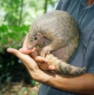

पैंगोलिनIndian Pangolin
Manis crassicaudata · Manidae · MAM-0017

- Scientific name
- Manis crassicaudata É. Geoffroy Saint-Hilaire, 1803
- Family
- Manidae
- Hindi
- पैंगोलिन / सल्लू
- Status here
- native
- IUCN
- VU
When to look कब देखें
Present all year.
पैंगोलिन / सल्लू / Indian Pangolin
Manis crassicaudata É. Geoffroy Saint-Hilaire, 1803 — Manidae
पैंगोलिन (सल्लू / बज्रकीट / सल्लू साँप / स्केली एंटीइटर) — पूर्वी उत्तर प्रदेश के पर्णपाती जंगलों, पथरीले झाड़ीदार इलाकों और खेतों के आसपास की खाली जमीनों में पाया जाने वाला एक अत्यंत दुर्लभ, पूर्णतः निशाचर (nocturnal) और अनोखा वन्यजीव स्तनधारी है। यह विश्व का सबसे अधिक अवैध शिकार व तस्करी किया जाने वाला स्तनधारी जीव है। इसकी सबसे बड़ी जैविक पहचान इसका पूरा शरीर (सिर से पूंछ तक) केराटिन से बने बड़े, कठोर, एक-दूसरे पर चढ़े हुए शल्कों (overlapping keratinous scales) से ढका होना है, जो दिखने में एक बड़े आर्टिचोक या देवदार के फल (cone) जैसा लगता है। खतरे का आभास होने पर यह खुद को मोड़कर एक अभेद्य गेंद (rolls into a tight ball) का रूप ले लेता है। इसके मुंह में कोई दांत नहीं होते (completely toothless), और यह अपनी 25-40 सेमी लंबी, चिपचिपी जीभ की मदद से केवल दीमकों और चींटियों को खाता है। यह दीमक के टीलों को खोदने के लिए अपने मजबूत, घुमावदार पंजों का उपयोग करता है। पारिस्थितिक रूप से, यह दीमकों (Mound-building Termite, SFL-0001) का मुख्य शिकारी है।
Legal Protection and Conservation Warning कानूनी संरक्षण और चेतावनी
[!CAUTION]
भारतीय पैंगोलिन वन्यजीव (संरक्षण) अधिनियम, 1972 की अनुसूची I (Schedule I) के तहत संरक्षित है, जिसे बाघ और शेर के समान ही देश में सर्वोच्च कानूनी सुरक्षा प्राप्त है। पैंगोलिन का शिकार करना, पकड़ना, नुकसान पहुँचाना या इसके किसी भी अंग (विशेष रूप से इसके शल्क) का व्यापार करना एक गंभीर, गैर-जमानती अपराध है, जिसके लिए न्यूनतम 3 से 7 साल तक की जेल की सजा और भारी जुर्माने का प्रावधान है।
वैश्विक और स्थानीय स्तर पर इसके शल्कों (scales) की चीन और दक्षिण-पूर्व एशिया में पारंपरिक चिकित्सा में झूठी कामोत्तेजक या औषधीय दावों (false medicinal claims) के कारण भारी तस्करी की जाती है। पैंगोलिन के शल्क केवल साधारण केराटिन (मानव नाखूनों और बालों के समान प्रोटीन) से बने होते हैं और इनमें कोई औषधीय गुण नहीं होते हैं। इसके अस्तित्व को बचाने के लिए अवैध शिकार को रोकना और स्थानीय संरक्षण प्रयासों को बढ़ावा देना अत्यंत आवश्यक है।
Quick Identification त्वरित पहचान
| Feature | Description |
|---|---|
| Scales | Covered in 160–200 large, overlapping, pale yellow-brown keratin scales arranged in 11–13 rows on the back |
| Body Shape | Elongated body with a small, cone-shaped head, thick muscular tail, and a scale-less pinkish under-belly |
| Limbs | Short, stout legs, with five toes on each foot; the front feet have three massive, curved claws for digging |
| Tongue | Long (25–40 cm), narrow, sticky, situated in a sheath retracting deep into the chest cavity |
| Defense | Rolls into a solid, sharp-edged ball, protecting its soft belly; can spray a foul-smelling fluid from anal glands |
Field tip: Search in dry deciduous forest floors near old termite mounds. Search for deep, circular burrows (15–20 cm wide) filled with loose soil. The foot marks show large, heavy curved claw scrapes. It is active only in pitch darkness; if seen, it looks like a slow-moving, armor-plated small lizard-pig.
Morphology आकारिकी
Biometrics (typical measurements of mature adult pangolins in the northern Indian plains):
| Measurement | Range |
|---|---|
| Head-body length | 60.0–84.0 cm |
| Tail length | 45.0–55.0 cm |
| Weight | 10.0–16.0 kg (up to 20 kg in large males) |
| Scale count | 160–200 total scales |
| Tongue length | 25.0–40.0 cm |
| Dental formula | I 0/0, C 0/0, P 0/0, M 0/0 = 0 |
Pelage and Scales: The scales cover the upper head, back, sides, and the entire tail. The scales are sharp-edged, hard, growing from the skin.
Head and Snout: The head is small, lack external ears (pinnae are reduced to folds), eyes are small with thick eyelids to protect from biting ants.
Digestion: Lacks teeth; it swallows small stones and sand that go into its muscular stomach (gizzard-like gizzard) to crush the swallowed ants and termites.
Behaviour & Ecology व्यवहार और पारिस्थितिकी
Burrowing Habits: Digs two types of burrows: feeding burrows (shallow, dug into termite mounds to feed) and living burrows (deep, sloping 2–6 meters underground, ending in a round sleeping chamber). It blocks the burrow entrance with soil when sleeping inside during the day.
Dietary Specialization: Insectivorous, feeding exclusively on eggs, larvae, and adults of mound-building termites (Odontotermes obesus) and large black ants (Camponotus). It breaks open hard mud mounds using its claws, inserts its sticky tongue, and pulls out thousands of insects.
Locomotion: Slow-moving, walking on the outer edges of its front feet to protect its long digging claws, with its tail held off the ground.
Associated Species / Interactions संबंधित प्रजातियाँ
- Primary Prey: Relies completely on Mound-building Termites (SFL-0001) as its primary food source. A single adult pangolin can consume up to 70 million insects per year, keeping termite populations in balance.
- Burrow Sharing: Abandoned deep pangolin burrows are utilized by pythons, porcupines, and monitor lizards as shelter.
Expected Locally स्थानीय रूप से अपेक्षित
Not a field record. Written from published accounts for eastern Uttar Pradesh. No confirmed local sighting yet — if you have seen it, that is what the atlas needs.
अभी तक स्थानीय पुष्टि नहीं। यह विवरण प्रकाशित स्रोतों से है, किसी अवलोकन से नहीं।
An extremely rare resident mammal of the Basti district, with historical records in the scrub zones of the Harraiya block near forest margins. Forest guards state that wild sightings are highly uncommon due to its nocturnal habits, but footprints and dug-out termite mounds confirm its presence. Any local sighting must be reported immediately to the Forest Department to prevent illegal poaching.
Distribution वितरण
Global range: Native to the Indian subcontinent, distributed across India, Pakistan, Sri Lanka, and Nepal.
In India: Found across most plains, hills, and dry deciduous forests; absent from high Himalayas and wet northeast rainforests.
In Uttar Pradesh: Distributed in reserve forests and scrub zones of eastern, central, and southern districts.
In Basti district / eastern UP: Extremely rare in scrub forests.
Research Questions शोध प्रश्न
Anyone can investigate these | कोई भी इन प्रश्नों की जाँच कर सकता है
- How many dug-out termite mounds can be located in a 1-square-kilometer scrub forest area in your block? — Map and count feeding signs.
- What is the diameter and angle of an active Pangolin living burrow compared to a Porcupine burrow? — Document burrow features.
- Does the Pangolin close its burrow entrance with soil only during winter days or year-round? — Track burrow entrance changes.
- How many minutes does a rolled-up Pangolin remain in a ball before unfolding when left undisturbed? — Record defensive behavior durations.
- How can we design a community alert network in Basti villages to report suspected wildlife poachers to the Forest Department? / हम वन विभाग को संदिग्ध शिकारियों की रिपोर्ट करने के लिए बस्ती के गांवों में एक सामुदायिक अलर्ट नेटवर्क कैसे डिजाइन कर सकते हैं? — Design warning posters and phone hotlines.
Similar Species मिलती-जुलती प्रजातियाँ
| Species | How to tell apart | comparison |
|---|---|---|
| Indian Porcupine (Hystrix indica) | Covered in long, sharp black-and-white quills (not flat scales); has large teeth; eats plant roots | साही — लंबे नुकीले कांटे, शाकाहारी भोजन |
| Monitor Lizard (Varanus bengalensis) | Reptile; covered in small granular scales (not large overlapping plates); has sharp teeth; fast-moving | गोह — छिपकली जैसी बनावट, नुकीले दांत |
| Chinese Pangolin (Manis pentadactyla) | Smaller; has smaller scales; possesses distinct external ears; found in northeast India | चीनी पैंगोलिन — कान की उपस्थिति, छोटा आकार |
Field rule: Nocturnal, toothless mammal covered in large, overlapping flat keratin scales, rolling into a hard ball when threatened, and digging termite mounds with massive front claws, is the Indian Pangolin (Sallu).
Taxonomy & Classification वर्गीकरण
Original description. Étienne Geoffroy Saint-Hilaire described the Indian Pangolin as Manis crassicaudata in 1803 in his Catalogue des Mammifères du Muséum National d'Histoire Naturelle (p. 272). The type locality was listed as India. The genus name Manis is derived from the Latin manes, meaning ghosts or spirits of the dead, referencing its nocturnal, elusive behavior. The specific name crassicaudata is Latin for thick-tailed.
Subspecies. Monotypic — no subspecies are currently recognised in the main index.
Family and order placement. Placed in the order Pholidota, family Manidae (pangolin family), genus Manis, subgenus Manis.
Phylogenetic notes. Manis crassicaudata belongs to the ancient placental order Pholidota, which split from other carnivores (Laurasiatheria) in the Cretaceous, developing complete tooth loss, scale armor, and specialized skeletal adaptations for digging and ant-eating (myrmecophagy).
IUCN status rationale. Assessed as Vulnerable (VU) by the IUCN Red List (assessed by the IUCN SSC Pangolin Specialist Group). It faces severe extinction pressure due to illegal hunting for its scales and meat, combined with slow reproduction rates (one pup per litter).
Photo Gallery फोटो गैलरी
References संदर्भ
- Geoffroy Saint-Hilaire, É. (1803). Catalogue des Mammifères du Muséum National d'Histoire Naturelle. Paris, p. 272. [original description]
- Jerdon, T. C. (1874). The Mammals of India. John Wheldon, London.
- Pocock, R. I. (1924). The External Characters of the Pangolins (Manidae). Proceedings of the Zoological Society of London.
- Challender, D., Waterman, C. & Baillie, J. (2014). Pangolins: Status Survey and Conservation Action Plan. IUCN SSC Pangolin Specialist Group. [definitive conservation reference]
- World Flora Online / Mammal Species of the World (2024). Manis crassicaudata details.
- GBIF Occurrence Data — Manis crassicaudata, India (2010–2025).
Source file: species/fauna/mammals/indian_pangolin.md